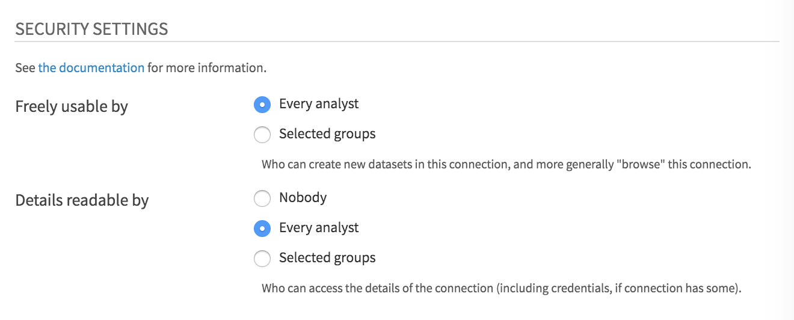

III. Creating a Vantage Connection
Follow the instructions in the Dataiku Reference Document for Installing Database Drivers. In summary, one needs to execute from the command line of a DSS server:
a. Stop the Data Science Studio server, where
DATA_DIRis the data directory where Data Science Studio is installed:DATA_DIR/bin/dss stopb. Copy the Teradata JDBC driver to the
DATA_DIR/lib/jdbcdirectory.
c. Restart Data Science Studio
DATA_DIR/bin/dss startAccess Dataiku DSS on a browser. Then, on the Dataiku DSS home page click on Apps.
 Then, on the submenu click [
Then, on the submenu click [Administration] (gear icon). Alternatively, you can go to
Alternatively, you can go to http://dataikuhost:port/admin/.On the DSS settings page, go to the [
Connections] tab. Click on [NEW CONNECTION]. Choose [Teradata] among the options that will be presented.
Fill up the fields as needed:
Basic Params Host: <database.host.name>
User: <Username>
Password: <User_password>
Default Database: <default_database>
Advanced JDBC properties:
CHARSET: UTF8
TMODE: TERAAll other fields can be left as-is.
Modify “Details readable by” to either
Every AnalystorSelected Groups.
Click on the [
Test] button to verify that connection details provided are valid.- Finally, click on the [
Save] button.